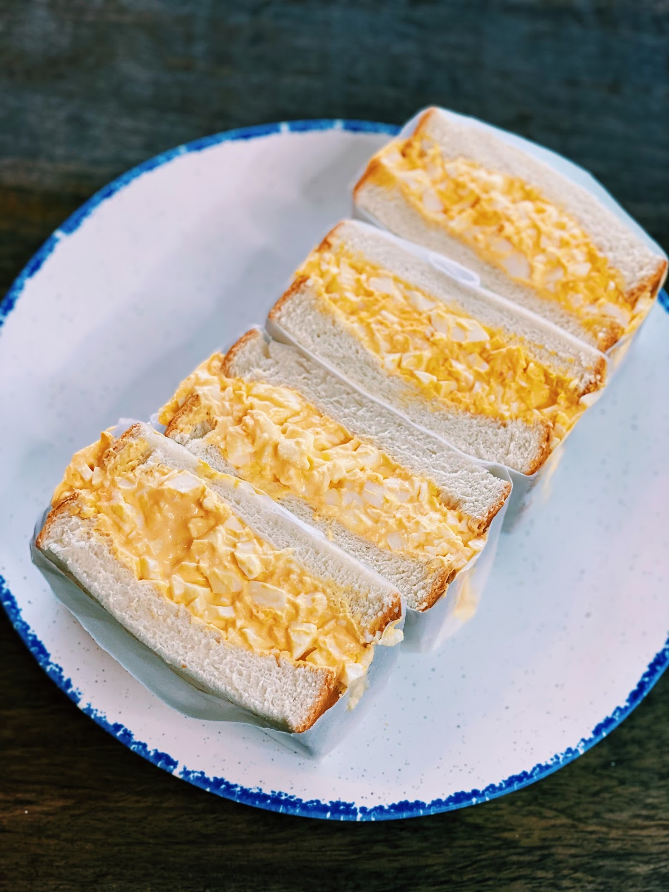

Japanese Egg Sandwich

Description
The Japanese Egg Salad Sandwich, or Tamago Sando, is a delightful breakfast classic. With creamy egg salad made flavorful by Kewpie mayo, it's sandwiched between soft milk bread slices. This simple yet delicious combination offers a taste of Japan's culinary charm, perfect for a satisfying and easy morning treat.
Ingredients
- 4 hard boiled eggs
- 6 white bread pan
- 3 tbsp of Kewpie mayonnaise
- a pinch of salt
- ½ tsp of sugar
- 2 tsp of milk
- salted butter
Steps
- Transfer your peeled eggs in a bowl and mash it with a fork. Note: make sure to mash the egg whites into small, same-size pieces.
- Add the sugar, salt, mayonnaise and milk all at once then mix until well combined.
- Now that you have your egg mixture, let’s assemble.
- Grab your bread and spread the butter on one side. Do this on all of the bread.
- Spread your egg mixture evenly on the buttered side of the bread.
- Put the other side of bread on top and push gently until it flattens.
- This next step is optional. With a knife, cut all sides of crusts off the bread.
- And lastly, cut the bread in half then serve.